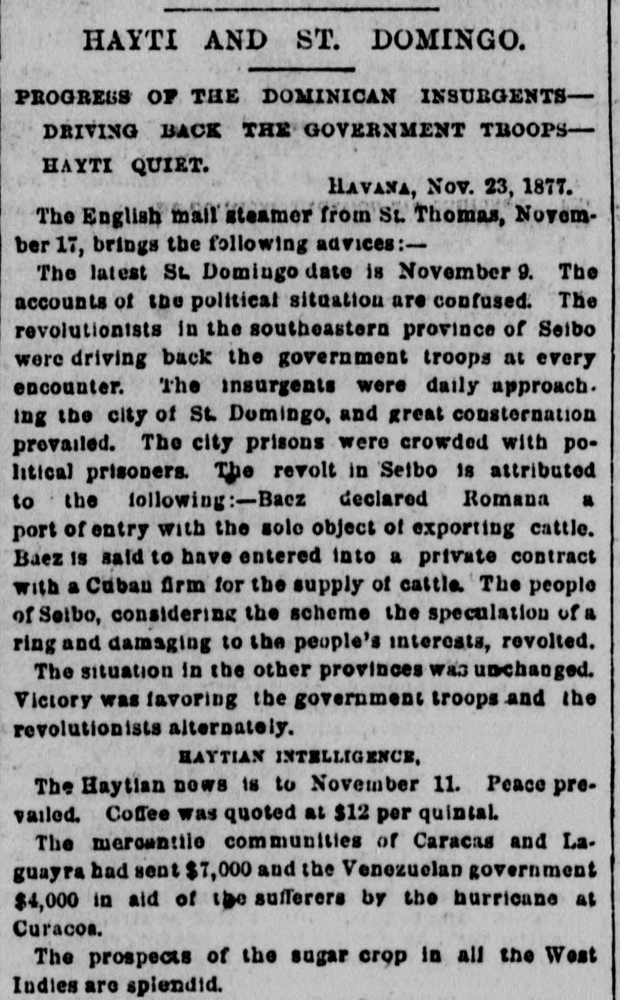
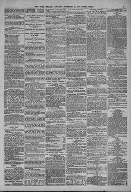

See the full pageVer la página completaVino had been ordered to iho ltlo Grande with 2,600 troopsQue había sido ordenado al Río Grande con 2,600 tropas
Advices from St. Thomas to November 17 report that Dominican revolutionists in the southeastern province of Seibo were driving back the government troops at every encounter and daily approaching the city of St. Domingo, where great consternation prevailed and the prisons were crowded with political prisoners. The revolt is attributed to Báez declaring Romana a port of entry to export cattle under a private contract with a Cuban firm, a scheme the people of Seibo considered a ring speculation damaging to their interests; in the other provinces, victory was favoring the government troops and the revolutionists alternately.Informes de Santo Tomás hasta el 17 de noviembre indican que los revolucionarios dominicanos en la provincia suroriental de El Seibo hacían retroceder a las tropas del gobierno en cada encuentro y se acercaban a diario a la ciudad de Santo Domingo, donde reinaba gran consternación y las cárceles estaban abarrotadas de presos políticos. La revuelta se atribuye a que Báez declaró La Romana puerto de entrada para exportar ganado bajo un contrato privado con una firma cubana, un plan que el pueblo de El Seibo consideraba una especulación de una camarilla, dañina para sus intereses; en las demás provincias, la victoria favorecía alternativamente a las tropas del gobierno y a los revolucionarios.
FULL TEXT:TRADUCCIÓN:
HAYTI AND ST. DOMINGO.HAITÍ Y SANTO DOMINGO.
PROGRESS OF THE DOMINICAN INSURGENTS—DRIVING BACK THE GOVERNMENT TROOPS—HAYTI QUIET.PROGRESO DE LOS INSURGENTES DOMINICANOS—HACIENDO RETROCEDER A LAS TROPAS DEL GOBIERNO—HAITÍ TRANQUILO.
HAVANA, Nov. 23, 1877.LA HABANA, 23 de noviembre de 1877.
The English mail steamer from St. Thomas, November 17, brings the following advices:—El vapor correo inglés procedente de Santo Tomás, 17 de noviembre, trae las siguientes noticias:—
The latest St. Domingo date is November 9. The accounts of the political situation are confused. The revolutionists in the southeastern province of Seibo were driving back the government troops at every encounter. The insurgents were daily approaching the city of St. Domingo, and great consternation prevailed. The city prisons were crowded with political prisoners. The revolt in Seibo is attributed to the following:—Baez declared Romana a port of entry with the sole object of exporting cattle. Baez is said to have entered into a private contract with a Cuban firm for the supply of cattle. The people of Seibo, considering the scheme the speculation of a ring and damaging to the people’s interests, revolted.La fecha más reciente de Santo Domingo es el 9 de noviembre. Los informes sobre la situación política son confusos. Los revolucionarios en la provincia suroriental de Seibo estaban haciendo retroceder a las tropas del gobierno en cada encuentro. Los insurgentes se acercaban diariamente a la ciudad de Santo Domingo, y prevalecía una gran consternación. Las prisiones de la ciudad estaban atestadas de presos políticos. La revuelta en Seibo se atribuye a lo siguiente:—Báez declaró a Romana puerto de entrada con el único objeto de exportar ganado. Se dice que Báez entró en un contrato privado con una firma cubana para el suministro de ganado. El pueblo de Seibo, considerando el plan la especulación de una camarilla y perjudicial para los intereses del pueblo, se rebeló.
The situation in the other provinces was unchanged. Victory was favoring the government troops and the revolutionists alternately.La situación en las demás provincias no había cambiado. La victoria estaba favoreciendo alternativamente a las tropas del gobierno y a los revolucionarios.
HAYTIAN INTELLIGENCE.NOTICIAS HAITIANAS.
The Haytian news is to November 11. Peace prevailed. Coffee was quoted at $12 per quintal.Las noticias haitianas son hasta el 11 de noviembre. Prevalecía la paz. El café se cotizaba a $12 por quintal.
The mercantile communities of Caracas and Laguayra had sent $7,000 and the Venezuelan government $4,000 in aid of the sufferers by the hurricane at Curacoa.Las comunidades mercantiles de Caracas y Laguayra habían enviado $7,000 y el gobierno venezolano $4,000 en ayuda de los damnificados por el huracán en Curacoa.
The prospects of the sugar crop in all the West Indies are splendid.Las perspectivas de la cosecha de azúcar en todas las Indias Occidentales son espléndidas.
The New York Herald. New York [N.Y.], November 24, 1877. Page 7.